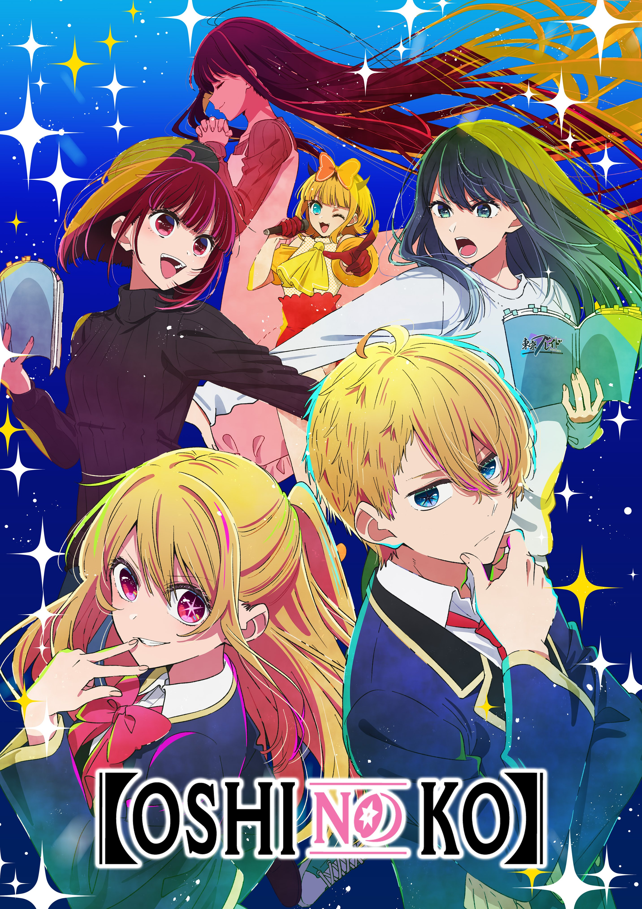

Name: Aka Akasaka
age: 35
Gender: Male
born: 29 August 1988
age: 35
Gender: Male
born: 29 August 1988
Studio: Doga Kobo
Manga: ongoing
anime: ongoing
Manga: ongoing
anime: ongoing
About the show

A doctor and his recently-deceased patient are reborn as twins to a famous Japanese musical idol and navigate the highs and lows of the Japanese entertainment industry as they grow up together through their lives.